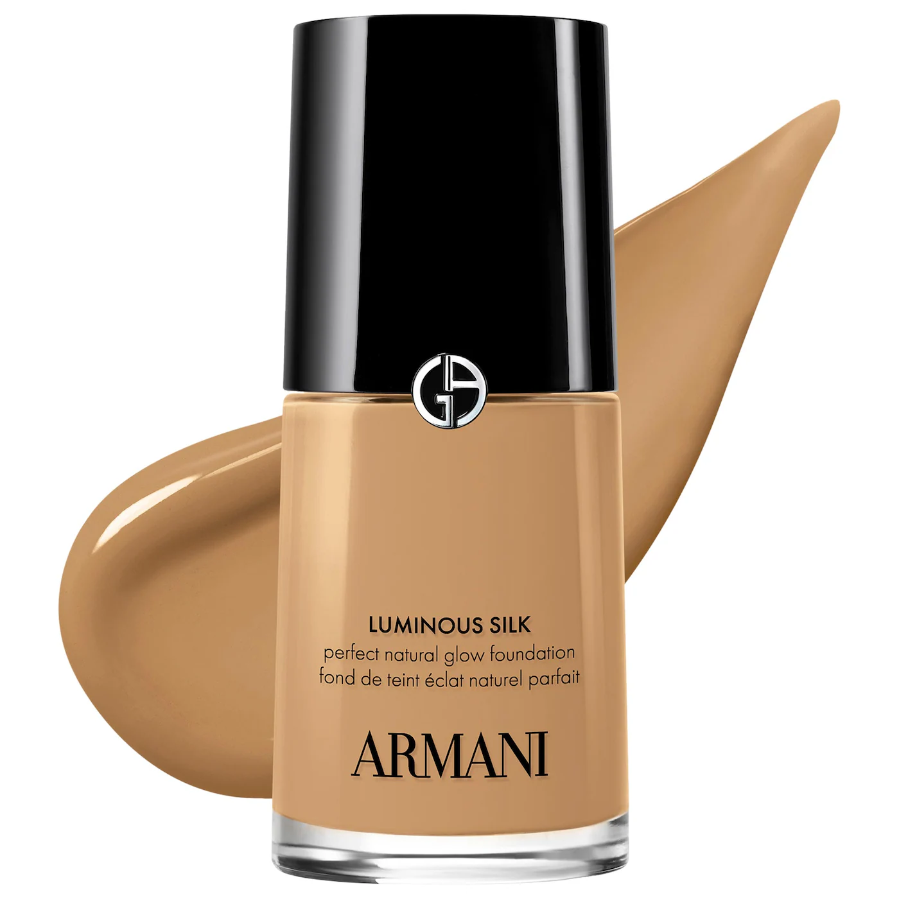
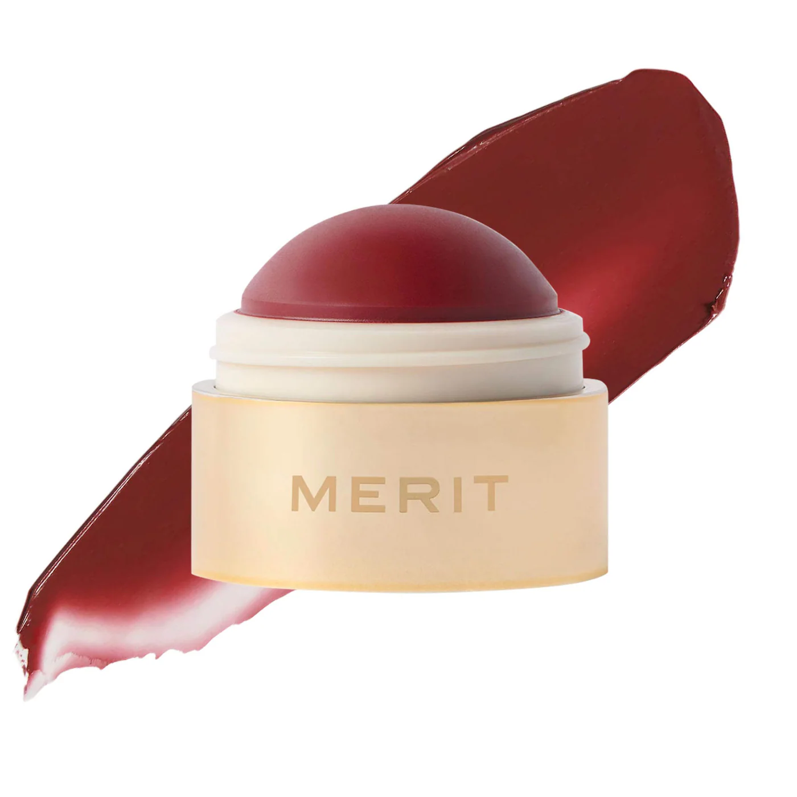
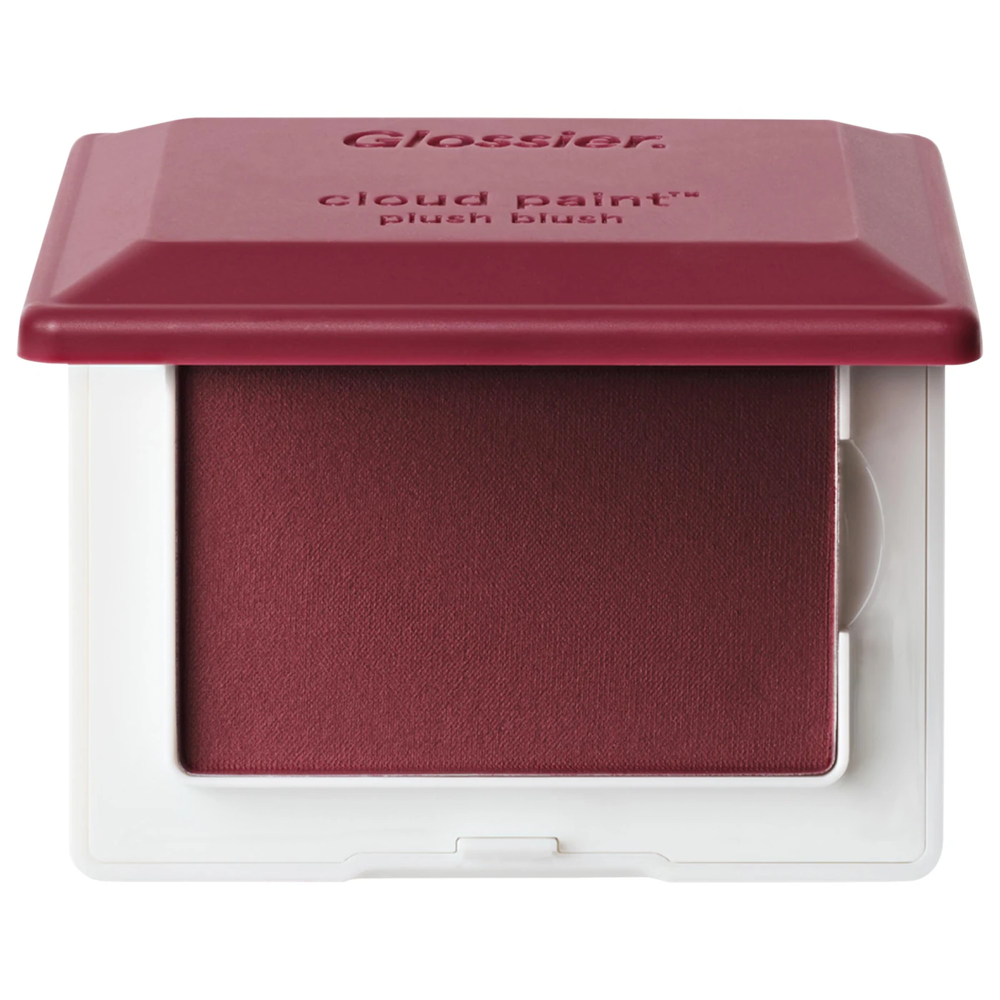
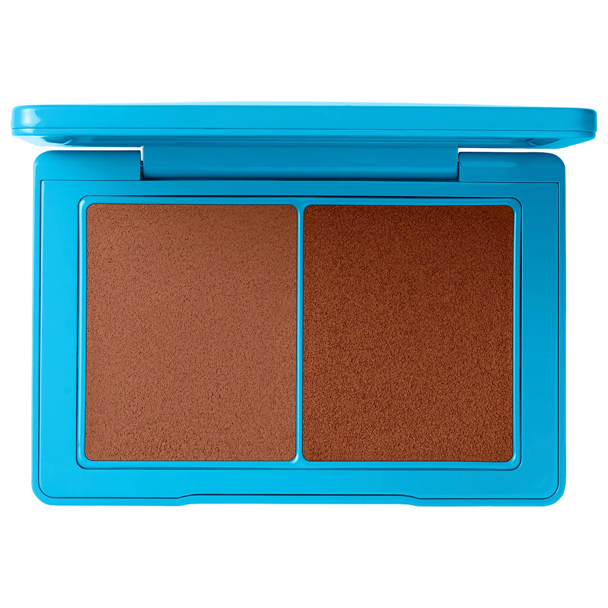
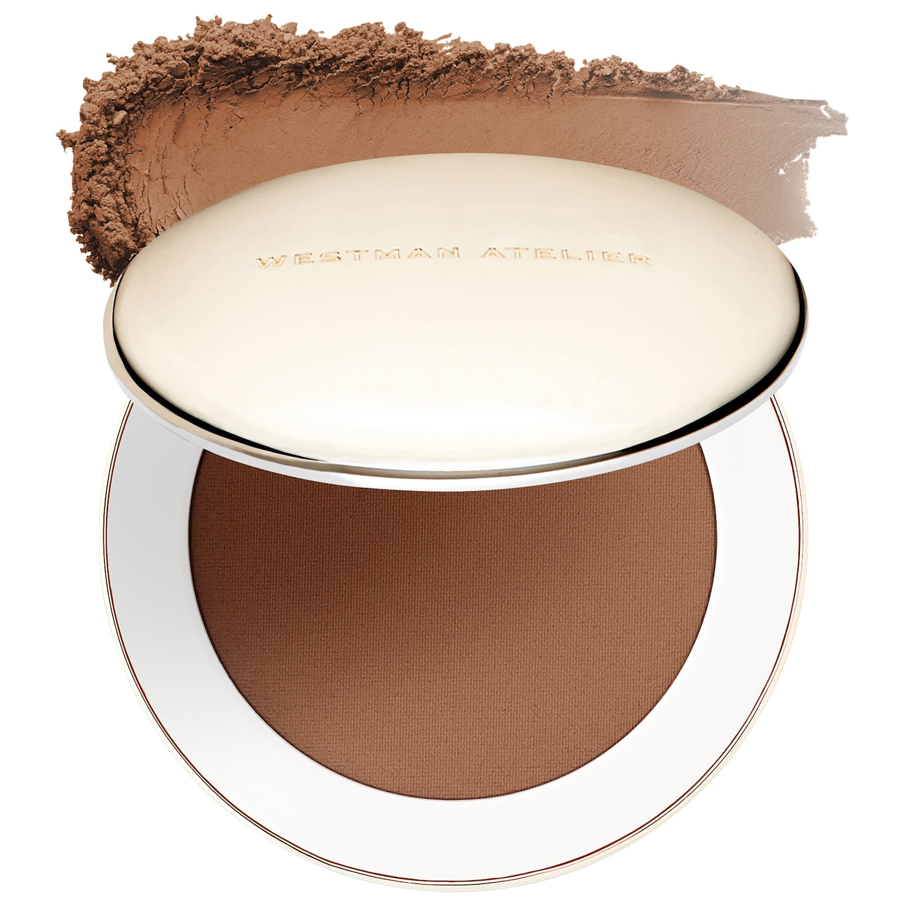

Try this makeup routine for your next event, date night, or girls night out.

SKIN PREP

By now, we've all heard over and over that the key to good makeup starts with skincare. And for a night out where you'll be eating, drinking and taking photos, this is especially true. Start with your regular gentle cleansing routine and then add a little extra hydration with Aestura's ATOBARRIER 365 Cream Mist. It's good on all skin types including acne-prone skin and creates the perfect base for your makeup routine.
FOUNDATION

The ultimate foundation for a night out. The Armani Luminous Silk Foundation is an industry favorite, and for good reason. It's lightweight and buildable, truly giving you a second skin finish that will last all night. Available in 44 shades and 6 undertones, this foundation also has one of the most inclusive shade range options on the market.
Blush

Blush has become my favorite part of my makeup routine and I love that over the past few years everyone has been rediscovering the impact it can have on your look. From a subtle flush to a high-impact layered look a la paintedbyesther, there really are so many ways to play around and add more color in your routine. Merit's Flush Balm Cream Blush is the perfect subtle flush that can built up for higher impact, especially for a night out or photos.

For a night out, it's especially important to include a powder blush and bronzer to set the liquid/cream all night. You can play around with blush colors and combinations to create a custom color and finish or stay with the same color to really enhance the liquid/cream. Glossier's Cloud Paint is the perfect blend of long-wear, buildable, and blurring.
Bronzer

For a night out, bronzing and sculpting is just as important as perfecting and concealing. What I love about Westman Aetelier's new Sun Tone Bronzing Creme - aside from the perfectly blendable formula - is that it includes two tones to not only mimic the warmth of naturally sunkissed skin but also create a multi-dimensional bronzed and contoured look.

In my search for acne-safe products, I came across the most perfect trick to create a beautiful, blurred finish and make sure my products aren't breaking me out - using a tinted setting powder as bronzer. While you don't need to stay within the same brand, I can't express how much I love Westman Aelier's Vital Pressed Skincare Blurring Setting Powder. It applies beautifully, is ultra pigmented while still giving the most natural, diffused, and skin perfecting finish.
Concealer

I was recently introduced to the Sarah Creal brand but instantly became a fan. The Face Flex Concealer was the first product I tried and I was instantly hooked after struggling with other concealers setting into my fine lines and being drying. The medium-coverage is perfect for nights out and the added caffeine visibly depuffs and helps reduce the appearance of dark circles.